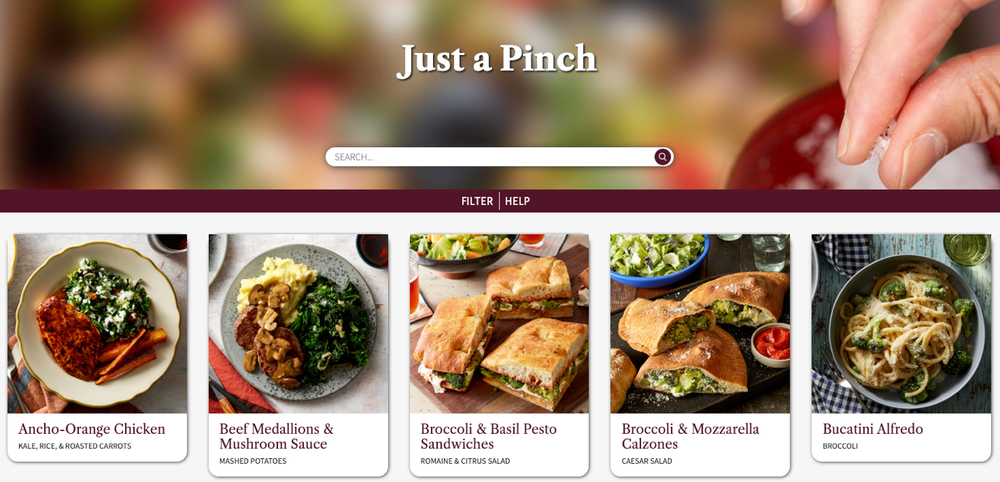
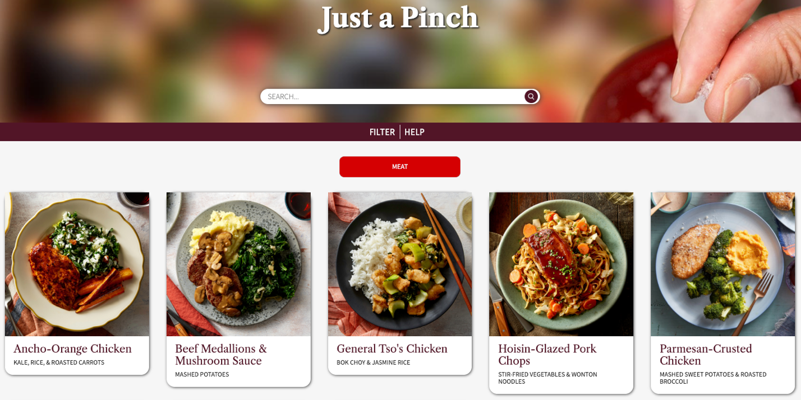

IDM 232 Case Study
Overview
Just a Pinch is a recipe database website that uses php to fill in the content. Php is critical to this project because it draws from a database, filling in each page accordingly. The recipe database is required to be styled for all screen sizes, have a functional search bar, functional filters, a home page showcasing all 40 recipes, a dynamic recipe page that fills in based on the recipe clicked. The main challenge for this project is getting the php to function correctly, this allows me as the coder to build only a few pages that will change/ fill in based on the database content.
Context & Challenge
Background
For this project, I was provided with a library of pre-written recipes in PDF format as well as a group of images related to each recipe. I used these assets to build a branded recipe interface for browsing, searching, and filtering through the 40 available recipes.
The Problem
The challenge for this project was the php. Php is a language I’ve never worked with before, so that portion of the project was most difficult. The PDF information was transferred to a database that I linked with my web page. Php takes from this database and fills the website, allowing the project to be optimized into only a few pages.
Goals & Objectives
The goal of this project was to have all php features be fully functional. These include: the home page recipe cards, the recipe page, the functionality of the filters, the functionality of the search bar, and a no results page for a search bar search with no matches.
Process & Insight
-
The first step in building this web page is to extract the text from the PDFs to be inputted into the database spreadsheet.
I worked with a classmate to create the database. Together we converted the PDFs to text using an online converter.
-
The next step is creating the database. My classmate and I used Google Sheets to create this database together.
Each recipe was broken into sections which became our database columns: title, side, filter, description, time, servings, nutrition, ingredients, steps, and images. Then each image was filled in row by row.
-
Next, the images needed to be dealt with. Since the images were already in folders by recipe name, my classmate and I decided to leave them that way and add the folder name to our database rather than each individual name.
We renamed each of the images in the folder to match its function: ingredients, main photo, and the step photos.
I then optimized the images for web so the website load times would not be incredibly slow trying to load in 40 large images.
I chose to create a photoshop action for my optimization so I would not need to hand optimize the 6-10 images for each of the 40 recipes.
-
Once the data and graphics were ready, I designed a website using html and CSS. Since the information would be fed in by the php, I just needed to design one home page recipe card and one recipe page. I went with a red, maroon, cream, and yellow color scheme. I chose these colors because they are colors commonly associated with food and cooking.
I chose a simple home page layout emphasizing the food images and titles, since most users like to see a photo of the finished product when they are choosing a recipe.
For the recipe page, I added a boxed in section for the cook time, servings, and calories to break up the page.
-
Before I got to the php, I made some changes to my initial html and css design. I felt that the text overlay on the image might cause issues due to the varying legnths of the titles and sides.
This lead me to my final product which uses image cards instead of a home page of image blocks. The cards will account for the difference in legnth without causing issues with the Layout.
I also moved the filter and help options to a nav bar, and used javascript to create the dropdown menus.
-
Now that I had a database, a layout, and optimized images, I was ready to add my php. The first step in adding the php was getting my database online. I needed to be able to access my database locally, to do this I downloaded MAMP, a sodftware that allows php to be run locally. I uploaded my database to MAMP’s website, creating one final column that would give each of the 40 recipe rows a unique id, something important for creating my pages later on. I also uploaded my database to bluehost, my hosting website, so it would be accessible on the web through my domain.
-
Now that the database was accessible both online and locally, I was set to begin building my php. I began by renaming all of my html files with a php extension. This allowed me to add php to my html files, essentially building the html document with php. For example, for the home page I wanted to display the 40 recipe images, titles, and sides. I began by telling php to get each row id, linking each card to the recipe page. Upon click the user would be taken to the page for the recipe they click on because php passed the id of that recipe to the url, and the recipe page read in that id, telling the page what information to fill in from the database. Next, I told the php to open the image folder based on the id of that row, and I linked the main photo which was named the same for every recipe folder. I also had the php grab the title and side from the selected row.
The recipe page was done in a similar way. The php would grab the steps from each recipe. The steps were written in one cell and separated by a \. Php is able to create an array from this cell, breaking up the content everywhere it sees a \. Then I cycled through the php for each step, printing them to the page. By using the row ids and column names from my database, I was able to create and autofill my home page.
-
With the pages built, and the content filling in correctly, all that was left was the filters and search bar. My classmate and I added a column to the filters with meat being a, seafood being b, and vegetarian being c. Thich made creating the filters with php easier because I only had to tell php to look in the filters column for one of those three characters. Once it had found all the a’s for example, I told it to display only those image cards.
Once I had the functionality down, I adjusted my javascript and css to make the filters and help dropdowns more accessible. I did this by reworking the javscript to make it more easily clickable, adjusting some html to create larger click zones, increasing the filters/ help font size, and changing the cursor to a pointer over the clickable elements.
-
The search bar was the last and most difficult step. To create a working search bar I had to create a php form. When the form button was submitted the form data (aka the serch input) was grabbed by the php. I told the php to search this form data against the titles and sides of each recipe and display any results that matched. This brings up any recipes that have main or side elements matching what was searched.
Lastly, I needed a no results page for when nothing matches what was searched. I added this as a condition in the loop I had created for the search bar, so I now had a page to load when there is no content to display.

I created a simple animation for this page to make it a little more fun than the typical no results page.
The Solution
My final product for Just a Pinch, is a fully functional recipe database website. The website is responsive, meaning it is styled for every screen size. The database displays all 40 recipes on the home page with the ability to filter and search. When a recipe card is clicked, the recipe page loads the information for that unique recipe. All of this is done in seconds behind the scene, with the user having no idea that the website was actually only built with 2 pages.
The Results
This project was a success. It fulfilled all of the requirements: it was coded from scratch using php as the primary langauge, it is self hosted on my domain, the code has been tracked on Github throughout the process, the database is hosted online, the project includes the full list of 40 recipes, and the website is responsive for all screen sizes. My code was validated before uploading, and the website functions without errors. My approach for this project worked well and allowed me to style my website without having to worry about php and then integrate the php without having to worry about styling after.I am proud of this project, and learned a lot while creating it.